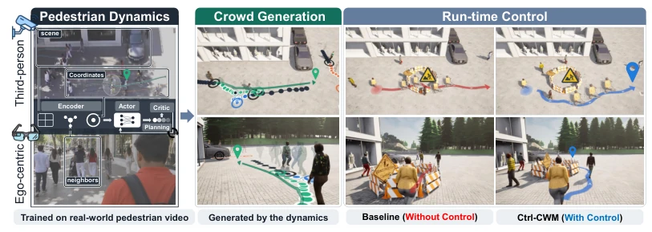
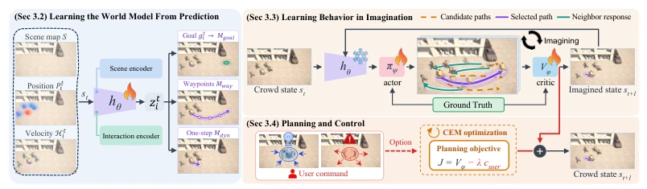
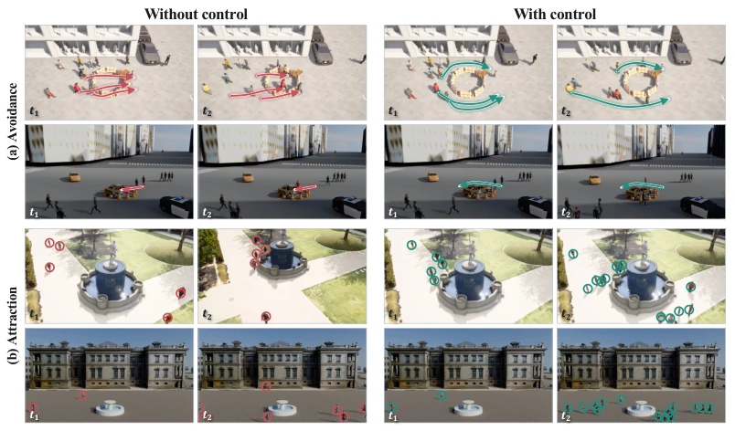
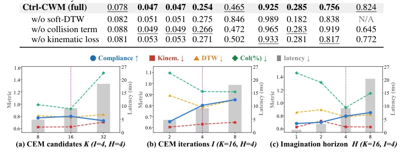
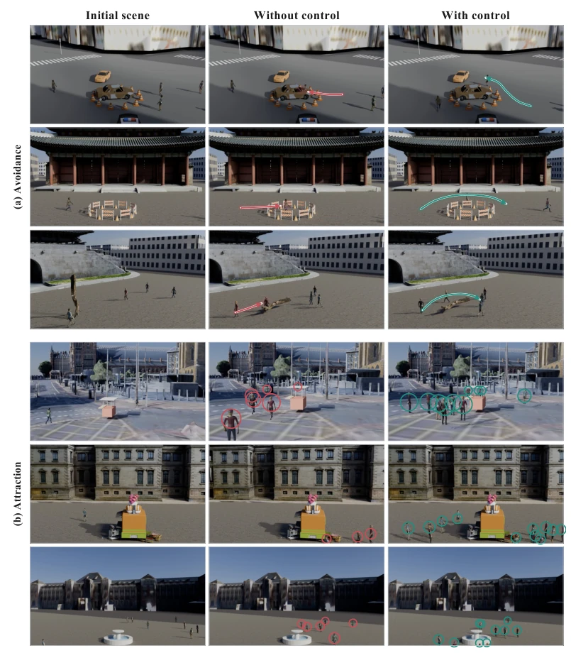

Ctrl-CWM attempts to inject a "soul" into crowd simulation using world models; this idea is quite appealing, as traditional methods treat pedestrians as NPCs too rigidly. Its biggest highlight is that after freezing the encoder, adding control objectives at runtime requires no retraining, making it much more flexible than TRACE. However, do not be too optimistic; it still relies on user-defined explicit spatial cost functions, far from true semantic understanding. For instance, you cannot say "go play by the fountain", you must draw a circle. Additionally, a 10ms planning latency may still be a bottleneck in large-scale scenarios, as world models are not magic. Overall, it is a solid engineering improvement, but there is still a considerable distance to go for general embodied intelligence; do not expect it to understand human intentions.
研究动机Motivation
人群模拟对机器人导航和城市规划至关重要，但现有方法要么太死板，要么太慢。传统模拟器如 ORCA (Van Den Berg et al., 2010) 依赖手工规则，难以适应新目标。基于学习的方法如 TRACE (Rempe et al., 2023) 和 CrowdES (Bae et al., 2025) 虽然能捕捉动力学，但控制受限，往往需要预定义参数或梯度引导，且 TRACE 采样耗时 1-3 秒。我们需要一个既能保留真实人类运动动力学，又支持运行时灵活控制（如避让或吸引）的模型。现有世界模型如 Dreamer (Hafner et al., 2019a) 在机器人控制中成功，但直接用于人群模拟需重新定义状态和动作，这正是本文要解决的痛点。
Crowd simulation is crucial for robot navigation and urban planning, but existing methods are either too rigid or too slow. Traditional simulators such as ORCA (Van Den Berg et al., 2010) rely on handcrafted rules and struggle to adapt to new goals. Learning-based methods such as TRACE (Rempe et al., 2023) and CrowdES (Bae et al., 2025) can capture dynamics but have limited control, often requiring predefined parameters or gradient guidance, and TRACE sampling takes 1-3 seconds. We need a model that preserves real human motion dynamics while supporting flexible runtime control (e.g., avoidance or attraction). Existing world models such as Dreamer (Hafner et al., 2019a) succeed in robot control, but applying them directly to crowd simulation requires redefining states and actions, which is the pain point this paper aims to solve.

Figure 1: Ctrl-CWM. Human dynamics learned from real-world pedestrian video (left) are used for continuous crowd generation (center) and runtime crowd control (right). User-defined objectives can be introduced at run time without retraining the model.
Ctrl-CWM consists of three stages: pre-training, imagination learning, and planning control. First, a trajectory prediction model is trained using real pedestrian videos, freezing the encoder hθ to preserve human motion dynamics. Next, the Actor proposes displacements based on encoder outputs, the Critic evaluates the quality of imagined trajectories, and both are jointly trained via L-step rollouts. Finally, the planner uses the CEM algorithm to sample candidate actions in the imagination space, selecting the optimal action by combining Critic scores and user-defined cost functions (e.g., avoidance areas). The core innovation lies in introducing the world model's "imagine future" mechanism into crowd simulation, using the Critic's ranking mechanism to ensure generated trajectories comply with dynamics and meet user goals, and adapting to new tasks without retraining the model.

Figure 2: Overview of Ctrl-CWM. Trajectory prediction trains the state encoder hθ on real-world pedestrian data, which is then frozen. The actor πψ and critic Vϕ are learned over imagined rollouts on this representation, and CEM adds a user cost to the critic score for run-time control.
Evaluated on ETH-UCY, SDD, and GCS datasets, baselines include ORCA and CrowdES. Metrics cover scene realism (density, frequency), agent accuracy (DTW, kinematics), and control compliance. Results show Ctrl-CWM outperforms baselines in realism and collision rate, with the highest avoidance compliance. Ablation studies show the pre-trained encoder significantly reduces kinematic error, and removing the collision term causes a sharp drop in compliance. Parameter analysis shows K=16, H=4 achieves a balance between performance and latency (approximately 10ms). Visualization results confirm the model can effectively guide crowds to avoid danger zones or move towards target points.

Figure 4: Run-time control. The left and right pairs show uncontrolled (red) and controlled (green) rollouts, respectively, at t1 and t2. (a) An avoidance objective redirects pedestrians away from the hazardous zone. (b) An attraction objective guides them toward the fountain.

Figure 5: Ablation of planning parameters. Lines show compliance and trajectory metrics over the post-activation control window. Gray bars report call latency in milliseconds on the right axes. Dotted lines mark the default settings.

Figure 6: Run-time control in additional reconstructed scenes. Columns show the initial scene, motion without control (red), and motion with control (green). Each objective is illustrated in three scenes. (a) Avoidance redirects pedestrians away from a hazardous region. (b) Attraction guides them toward a specified target.